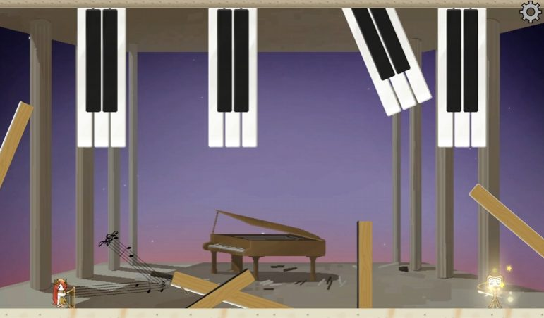

← 대표 프로젝트03 / GAME JAM · 2024.07
빛을 향해서
3일 동안 구현하고, 2일 동안 다듬었습니다.
3명이 5일간 만든 변신 퍼즐 게임입니다.
처음부터 구현 3일, 폴리싱 2일로 계획했고 그대로 진행했습니다.
- 팀 규모
- 3명
- 역할
- PD · 프로그래머
- 청강대 × 유니티 게임잼
- 우수상

▶빛을 향해서 플레이 영상 ↗01 / PLAN & DELIVERY
5일 개발 일정
DAY 01—03핵심 플레이 완성
변신 시스템과 기초 스테이지 구현
DAY 04—05연출·사운드 폴리싱
카메라 · 이펙트 · Live2D · 사운드
3일 안에 변신 시스템과 기초 스테이지를 완성했습니다. 남은 2일은 계획대로 카메라·이펙트·Live2D·사운드를 다듬는 데 썼습니다.
02 / TEAMWORK
팀원별 담당 업무
시스템 · 본인
변신 시 스탯·스킬셋·애니메이터를 교체하는 구조와 Live2D 시선 추적을 구현했습니다.
스테이지·기믹 / 아트
다른 프로그래머는 스테이지·기믹을, 아트 담당자는 변신 애니메이션과 배경을 맡았습니다.
03 / RESULT
12개 팀 중 우수상을 받았습니다.
청강대 × 유니티 게임잼 우수상 수상 · 2024.08.07